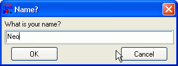
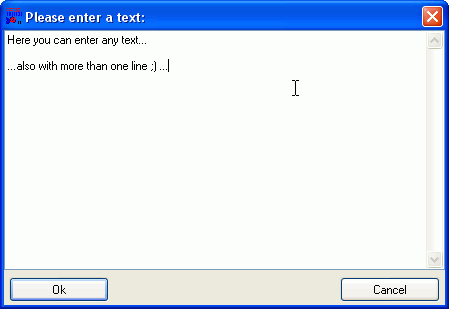

Prompting data from the user
To prompt values and information from the user, RapidBATCH provides three different, powerful build-in dialogs.
The mostly used one is the INPUTBOX, that you had already learned to know in the previous examples. This dialog allows to prompt smaller values, e.g. numbers, names or labels, from the user. INPUTBOX is called as a function, which returns the text the user entered in the INPUTBOX's input-field to the corresponding return variable. As parameters, INPUTBOX expects three values: A dialog-title, a prompting text and an optional, pre-defined value that is displayed in the input-field of the dialog. This value can be modified and replaced by the user at dialog run-time.
A simple example is the already in the basics-chapter presented script, where the script prompts the user for a name and displays this name in an ECHO-dialog.
rem Ask for the user's name
inputbox [user] = 'Name?', 'What is your name?', ''
rem Output the prompted name
echo 'Your name is: ' # [user]
end

The INPUTBOX-dialog for prompting value from the user
If the user clicks the OK-button (or also by simply pressing the Enter-key on the keyboard), the text that has been entered in the text-field is returned by the function. Else, if the user hits the Cancel-button (or presses Esc-key on the keyboard), an empty string is returned.
The captions displayed on the buttons can be changed by setting the pre-declared variables [InputBox_Ok] and [InputBox_Cancel] to any desired value, for example in other languages than english. By default, the INPUTBOX is displayed centered on the screen; But this can also be changed, using the variables [InputBox_X] and [InputBox_Y]. This has the same effect as with the INFOBOX-dialog: The dialog can be moved to any position on the screen. By setting the value '0' to the particular variable (which is also the default value here again!), the dialog is centered on the particular axis.
[InputBox_Ok] = 'All right!'
[InputBox_Cancel] = 'Stop!!!'
inputbox [test] = 'Changed button captions', 'Please enter something:', 'Hello World'
echo [test]
end
Next to the INPUTBOX-dialog, RapidBATCH also provides the PWDBOX-dialog, which is nothing more than an "INPUTBOX for prompting passwords", providing instead of a normal input-field a masked input-field, replacing each character with an asterisks (*). A PWDBOX-dialog may (and should!) only be used to prompt on passwords (because of that the "PWD" in "PWDBOX", a shortcut for "PassWorD"). The parameters for the PWDBOX dialog are the same (also with the same effect) as the ones from INPUTBOX. Because PWDBOX interally uses the same dialog-window than INPUTBOX, the dialog's position is also defined by the variables [InputBox_X] and [InputBox_Y], and also the caption of the buttons can modified by setting [InputBox_Ok] and [InputBox_Cancel] to the desired values.
pwdbox [password] = 'Password', 'Please enter your password:', ''
echo 'Your password is: ' # [password]
end
Yet, we only had been able to get single-line inputs from the user; Surely these will suffice in the most of all cases, but sometimes it is also necessary to let the user edit huger texts than just one single line. For this purpose, RapidBATCH provides the third of its build-in data input dialogs: The EDITBOX! The EDITBOX-dialog allows to edit a complete text, as it is known from the Windows Notepad-Editor. This dialog provides nothing more than a window, which can be resized, containing one multi-line edit field where text can be edited. On the bottom of the EDITBOX, an OK- and Cancel-button is available, to confirm or cancel the dialog. The success of an EDITBOX can be verified the same way like INPUTBOX: If the OK-button was hit, the function returns the text the user edited, else an empty string.

The EDITBOX-dialog to edit huger amounts of texts
Parameters of the EDITBOX-function are a dialog-title, an optional, pre-defined text that is displayed in the edit field at dialog startup and at least a so called mode-style value. This mode-style allows to use EDITBOX in two different modes: The edit-mode (default mode, turned on by specifying the value 'writeable', '0' or [true]) where the user can edit the text displayed in the text-field, and the readonly-mode (turned on by specifying the value 'readonly', '-1' or [false]), making the text read-only, so that it only can be viewed, but not changed.
Example:
rem Editing larger texts like with a text editor using the EDITBOX-dialog
editbox [text] = 'Please enter a text:', '', 'writeable'
msgbox 'The text you entered:', [text], '64'
end
The EDITBOX-dialog can be sized before the dialog startup using the variables [EditBox_Width] and [EditBox_Height]. Same as described in the previous dialogs, EDITBOX is also displayed centered, by default. To change its position to any desired screen-position, use the variables [EditBox_X] and [EditBox_Y], and set them to any pixel position you wish. By setting one of these two variables to value '0', the dialog is centered on the screen on the particular axis, as it is the case at the allready described dialogs.
The captions of the buttons displayed on the EDITBOX-dialog can be changed equivalently to INPUTBOX, by using the pre-declared variables [EditBox_Ok] and [EditBox_Cancel]. By setting one of these variables to an empty-string, the particular button becomes invisible, so that it is not shown on the dialog at run-time. This can be useful, e.g. when you just want to view a text and provide a "Next"-button only. The following example, a file-viewer script, shows how this is be done (the functions OPENBOX and READFILE are discussed later):
rem file-viewer script using the EDITBOX-dialog
rem prompt a filename to open and view
openbox [file] = 'Please select a file:', 'Text files|*.txt'
if [file] = '' halt
rem read file content to [text]
readfile [text] = [file], '0'
rem customize EDITBOX
[EditBox_Ok] = ''
[EditBox_Cancel] = '&Next >'
[EditBox_Width] = '450'
[EditBox_Height] = '480'
rem display the text...
editbox [text] = 'Content of ' # [file], [text], 'readonly'
end
Copyright © 2000-2006 by J.M.K S.F. Software Technologies, Jan Max Meyer
All rights reserved.